Se encuentra en la región de la torre de Tabanta, pero solo podrás completarlo después de haber derrotado a la bestia divina de esta zona. Si lo has hecho, podrás activar la Prueba heroica (La canción orni) que te abrirá la entrada. Para ello debes hablar con Vedli en el Pobaldo orni. Te cantará la primera parte de una canción, pero no se acordará del resto.
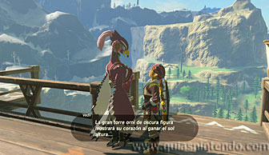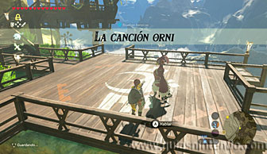
Después busca en el mismo poblado a su hermana (Zeli) y te dará la segunda parte de la canción (siempre que tú recuerdes la primera, ya que te irá preguntando y debes contestar correctamente).
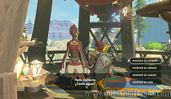
A continuación, debes ir a la entrada al santuario (al sur del poblado) y allí cerca encontrarás un pedestal en el suelo que es el que se tiene que activar para que aparezca la entrada.
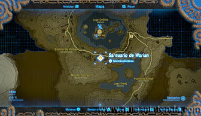
Si te colocas sobre el pedestal y miras al poblado, verás que la gran columna central tiene un hueco en medio con forma de corazón.
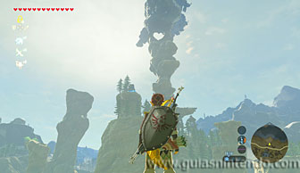
Si la luz pasa por ese agujero e ilumina el pedestal (sobre las 12:30 de la mañana es cuando ocurre) tendrás la oportunidad de activarlo (muy cerca hay una cacerola donde puedes dormir hasta el mediodía). Para ello debes hacer fuego sobre el pedestal, ya sea creando una hoguera o disparando una flecha de fuego o explosiva.
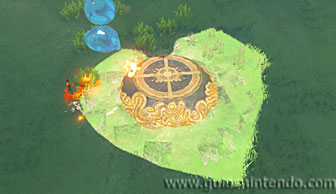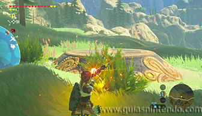
Una vez que aparezca la entrada podrás entrar al santuario sin problemas. Aquí tendrás que disparar unos cañones usando tus bombas.
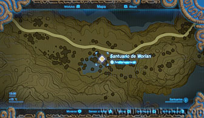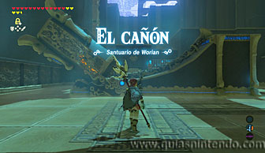
Hay un cofre con un Arco de halcón detrás de unos bloques agrietados que puedes romper con una bomba. Desde el cañón, mira a la izquierda para verlos. Ahora colócate en la parte trasera del cañón y deja una bomba para que caiga dentro. Cuando la explotes dispararás el cañón.
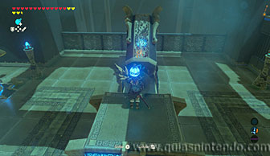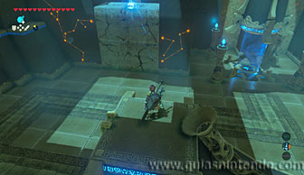
El objetivo es dar a las dianas que hay al fondo. La primera ve no hay ningún impedimento, pero para la segunda se moverán unas plataformas que pueden impedir tu objetivo. Tienes que calcular el momento justo para que no paren a la bala.
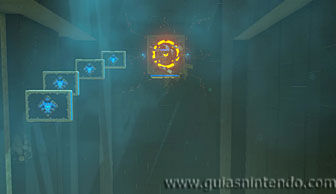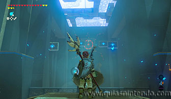
Si lo haces bien se abrirá la puerta de salida y verás el altar, aunque hay otra puerta al fondo con otro cañón. Si también usas ese y consigues dar en el objetivo podrás abrir el acceso a un cofre con un diamante.
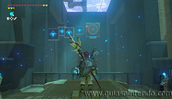
Ahora lo único que te queda es dirigirte al altar para conseguir el símbolo de valía correspondiente.
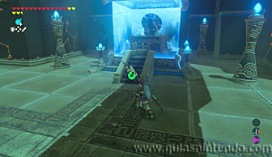